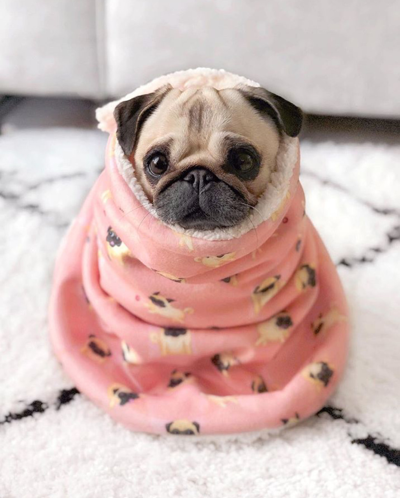

|
Породы собак:
|
1. Введение
Это веселая, дружелюбная, уравновешенная порода с ласковым и благородным нравом. Собаки очень преданы хозяину и его семье, хорошо ладят с детьми. Они нуждаются во взаимности. Если захотят внимания, то просто подойдут и поудобнее устроятся рядом. Не оставляйте четвероногого друга надолго одного. В одиночестве он будет страдать, показывая это всем своим видом.
Мопсы очень настойчивы. Если они чего-то захотят, то без труда покажут это хозяину. К дрессировкам и тренировкам относятся не очень хорошо. Очень важно во время дрессировки не повышать голос на питомца, иначе вы напрочь отобьёте желание к тренировкам. А его и так практически нет.
Несмотря на компактные размеры, это чуткие сторожа, которые всегда готовы самоотверженно защищать хозяина и его семью.

2. Достоинства и недостатки породы
Как у любой другой породы, у мопсов есть свои преимущества и недостатки.
| Плюсы |
Минусы |
| Короткая шерсть – она не остается на одежде и не требует тщательного ухода.
Уживчивый, спокойный характер – песики хорошо ладят с детьми и другими животными.
Понимают хозяина с первого слова, отлично улавливают настроение.
Редко лают или шумят, практически не проказничают.
Не слишком привередливы к пище и условиям содержания. |
Упрямство и настойчивость питомцев.
Они обожают спать в постели, и выдворить их оттуда невозможно – если закрыть дверь, пес будет грызть и царапать ее, пока владелец не передумает.
Во сне они храпят, что может мешать хозяевам нормально выспаться.
На протяжении жизни часто болеют, причем некоторые патологии требуют операций и дорогостоящего лечения.
За глазами собаки необходимо тщательно ухаживать и оберегать их от повреждений – даже простое попадание грязи и пыли может вызвать проблемы.
Любимцы часто страдают ожирением – отказать маленькой собачке, которая умильно смотрит на хозяина и выпрашивает лакомство, практически невозможно. |
Это всё, спасибо за внимание!!!
|